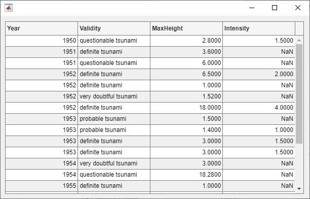
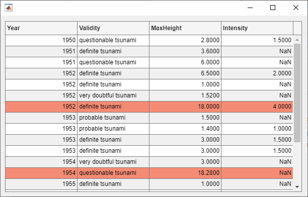
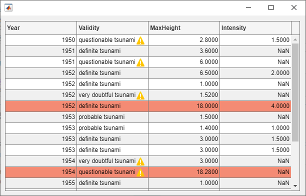
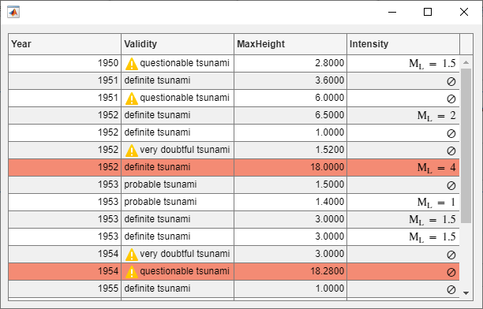
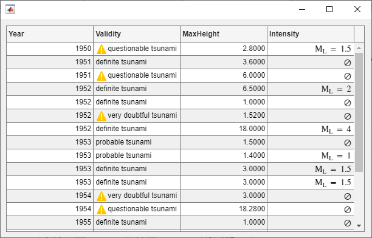

Style Cells in a Table UI Component
When you display table data in an app, you can style individual cells, rows, and
columns of the table UI component by using the uistyle and
addStyle functions. Use styles to modify background colors,
display icons, format equations, and provide clickable links in table cells. This
example shows how you can use styles to display sample tsunami data in a table.
Create Table UI Component
Read in tsunami data from a file, and then extract a subset of the data to display.
T = readtable("tsunamis.xlsx"); T = T(1:20,["Year" "Validity" "MaxHeight" "Intensity"]);
Display the data in a table UI component.
fig = uifigure; tbl = uitable(fig,"Position",[10 10 540 400],"Data",T);

Modify Background Color of Table Rows
Draw attention to the rows of the table that represent the largest tsunamis by setting the background color of those rows to red.
First, find the rows that represent tsunamis with a maximum height greater than 10 meters.
rows = find(tbl.Data.MaxHeight > 10);
Then, create a style with a red background color and add the style to those rows.
s1 = uistyle("BackgroundColor","#F48B74"); addStyle(tbl,s1,"row",rows)

Display Icons in Table Cells
Next, add a warning icon to the table cells that specify that the tsunami validity is questionable or very doubtful.
Find the rows with questionable or doubtful tsunamis. Because all the cells that specify validity are in the second column of the table, construct an array containing the row and column indices of the cells by horizontally concatenating a vector that contains only values of 2.
warningRows = find(strcmp(tbl.Data.Validity,'questionable tsunami') | ... strcmp(tbl.Data.Validity,'very doubtful tsunami')); warningColumns = repmat(2,size(warningRows)); cells = [warningRows warningColumns];
Finally, style the cells with a warning icon to the right of the text.
s2 = uistyle("Icon","warning","IconAlignment","right"); addStyle(tbl,s2,"cell",cells)

Format Equations and Symbols in Table Column
Add TeX markup to the Intensity column of the table.
First, identify the rows with no intensity data. Then, convert the values in the
Intensity column to strings, and specify that the cells with
missing data display the ⊘ symbol. For the cells with data, prepend the string
"M_L = " to the data to indicate that the value gives the
Richter
magnitude.
nanData = isnan(tbl.Data.Intensity); tbl.Data.Intensity = string(tbl.Data.Intensity); tbl.Data.Intensity(nanData) = "\oslash"; tbl.Data.Intensity(~nanData) = "M_L = " + tbl.Data.Intensity(~nanData);
Style the cells in the column to use TeX markup by setting the
Interpreter property to "tex".
Additionally, align text on the right side of the cells in the column by setting the
HorizontalAlignment property to "right".
s3 = uistyle("Interpreter","tex","HorizontalAlignment","right"); addStyle(tbl,s3,"column","Intensity")

Remove Style
Inspect the styles on the table by querying the
StyleConfigurations property of the table UI component. The
styles are listed in the order in which you applied them to the
table.
tbl.StyleConfigurations
ans =
3×3 table
Target TargetIndex Style
______ _____________ _________________________
1 row {[ 7 13 16]} 1×1 matlab.ui.style.Style
2 cell {6×2 double } 1×1 matlab.ui.style.Style
3 column {'Intensity'} 1×1 matlab.ui.style.Style
Remove the first style from the table.
removeStyle(tbl,1)

See Also
Functions
uitable|uistyle|addStyle|removeStyle|uifigure